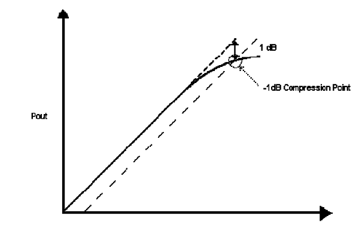
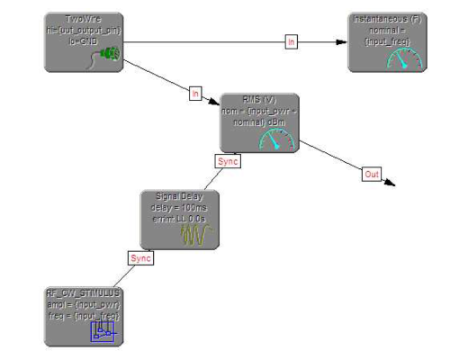

RF Testing using Signal Modelling ( Part 2)
Type of Test
Gain
The gain of an amplifier is the ratio of output power against input power and is usually measured in dB (decibels). Gain may be calculated as:
Gain (dB) = 10 log [ Pout / (Pin) ]
where Pout and Pin are represented in W (Watts)
1 dB Compression Point
 Figure 1 - Pout vs Pin, showing 1 dB Compression Point
The 1 dB compression point occurs where the input power forces the device into a non-linear region and its gain 1 dB below an imaginary line, projected upwards from the device's linear region of operation (the small signal gain).
Measurement of the 1 dB compression point of a device cannot be achieved in a single step; rather, it requires multiple gain measurements over a range of input power. That said, these multiple measurements may be encapsulated in a single instrument function.
TSF Design
A full listing of the TSFs (Test Signal Framework) designed for this study can be found in Annex A.
UUT Power Supply
Before any testing can take place, the UUT must be powered. The UUT data sheet specifies a requirement of:
Voltage (nominal): 12 V, (maximum): 13 V
Current (maximum): 45 mA
Figure 2 - UUT Power Supply TSF
Figure 4 shows the UUT PSU (Power Supply Unit) TSF. At its most basic, this is a Constant voltage applied to the UUT power pins through a TwoWire connection. In this model, however, the maximum permissible voltage is specified through the 'errlmt MAX' modifier of the Constant's amplitude property, as 13 V.
The current that a UUT might consume has, historically, been ignored in previous studies, since IEEE 1641 specifies tests only in terms of the UUT (i.e. the test specification is for a Constant voltage; the UUT specification is that it may draw up a certain current). However, in order to maximise the efficiency of allocation of a sensible resource, this information is required. For example: A precision voltage supply and a heavy duty power supply may both be capable of supplying a Constant 12 V; the former might have a very small current capacity, whereas the latter may require a minimum current drain in order to provide proper regulation.
In order to indicate the range of possible current drain for the UUT, a concept of 'capability' has been added to the UUT power supply TSF. This stipulates that, during the test, it will be 'true' that the Instantaneous current will nominally be 37 mA, with an maximum absolute value of 45 mA (i.e. 37 mA errlmt MAX 45 mA). The Instantaneous BSC (Basic Signal Component) does not have an Out connection, so is, therefore, not a 'test requirement'.
RF CW Stimulus
Both 1 dB Compression Point and Gain tests require a known RF (Radio Frequency) CW (Continuous Wave) stimulus signal be applied to the UUT before any measurements are taken.
Figure shows the RF CW Stimulus TSF. Key considerations for this signal are that it is a power signal and that it is delivered into a 50 Ohm load.
Additionally, the use of a Load BSC, to represent the input impedance of the UUT, has been superseded by the use of the 'load' modifier of the Sinusoid's amplitude value.
1 dB Compression Point TSF
A particular approach was taken to define this TSF such that it defines the point where the 1 dB compression point occurs, rather than a process to locate it.To locate the 1 dB compression point requires a series of measurements, each iteration based on the previous. By defining the target rather than the process, this study hopes to further show the implementation independence of signal-based test definition.
The linear region of this line is the 'small signal gain' region, where the amplifier is known to have a linear response. It is known that this line will curve downwards as the amplifier runs into 'compression'. The heavier dashed line is extrapolated to be 1 dB below the linear region and then projected upwards until it intersects with the measured line. The finer dashed lines encapsulate the region coloured green, which defines the error limit for the measurement.
To measure the 1 dB compression point, a test program typically takes measurements, denoted by the vertical arrows, along the solid black line until the measured value is in the region coloured green. These measurements might be in a sequence of very small steps (small enough not to step over the green region); or, might be initially large, stepping back & reducing in size each time the green region is stepped over.
Figure 4 - 1 dB Compression Point TSF
Figure shows the TSF design for the 1 dB compression point test. Key points to note are the inclusion of the RF_CW_STIMULUS TSF, used to sync the measurement; the RMS measurement of type voltage, used to measure power; and, the Instantaneous frequency measurement, used to specify capability requirement.
By including the RF_CW_STIMULUS, through a Sync connection, the TSF is defining that the stimulus signal must be applied to the UUT before the measurement is taken. A SignalDelay is used to define a minimum settling time for the UUT.
The RMS voltage measurement defines, through the nominal value, that the measured value should be supplied as a power, calculated based on a (default) load value of 50 Ohm.
1 dB Compression Point TSF
 Figure 5 - Gain TSF
Figure shows the TSF design to determine gain. Key points to note are the inclusion of the RF_CW_STIMULUS TSF, used to sync the measurement; the RMS measurement of type voltage, used to measure power; and, the Instantaneous frequency measurement, used to specify capability requirement.
By including the RF_CW_STIMULUS, through a Sync connection, the TSF is defining that the stimulus signal must be applied to the UUT before the measurement is taken. A SignalDelay is used to define a minimum settling time for the UUT.
The RMS voltage measurement defines, through the nominal property, that the measured value should be supplied as a power, calculated based on a (default) load value of 50 Ohm.